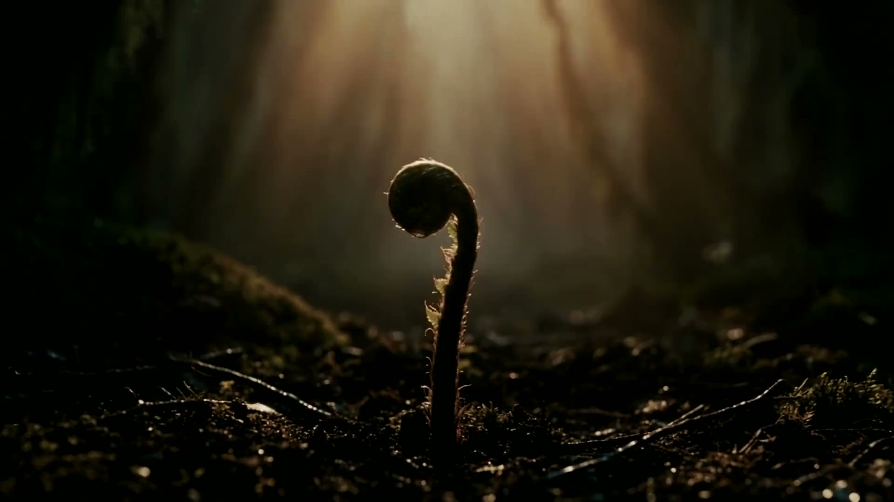

Sedang diputar
MusisiVideo musik
Otak manusia, kecepatan AI.
Kualitas setara TVC, tanpa jadwal syuting berbulan-bulan. Film iklan, kampanye, dan serial untuk brand, agensi, dan instansi.
Karya terpilih
Dari serial orisinal sampai kampanye layanan publik, setiap film diarahkan dan dirampungkan di studio kami.